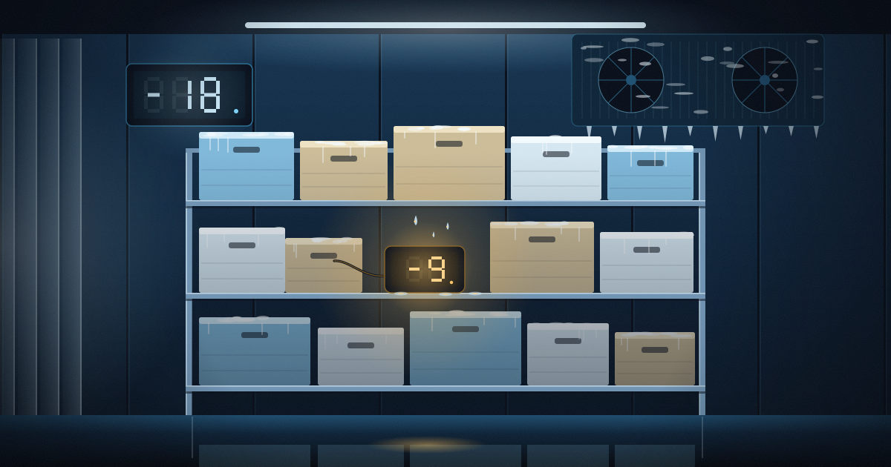
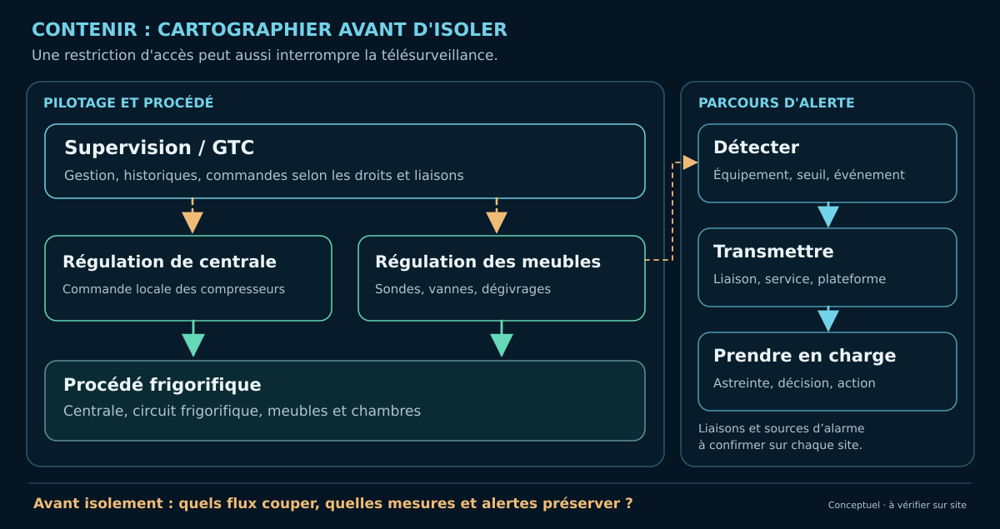
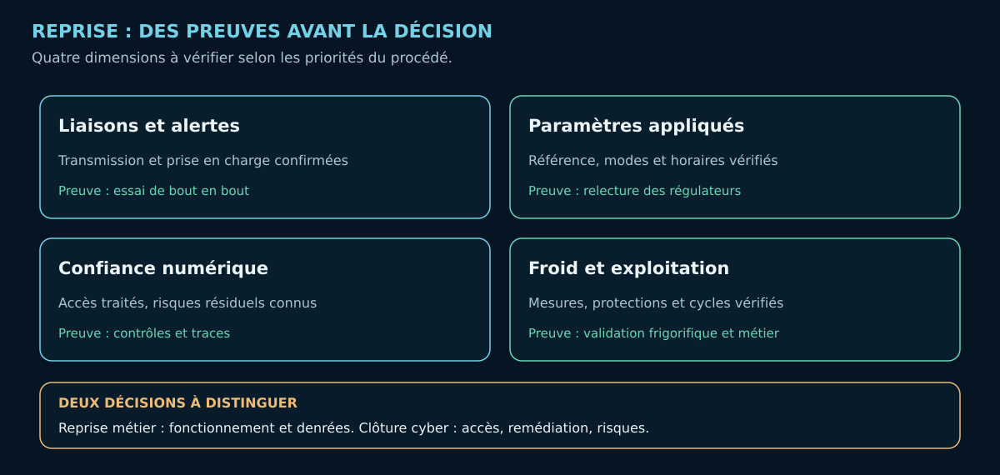

Cyber-résilience du froid commercial : gérer l'incident, préserver le procédé
Face à un incident cyber : protéger les denrées, maintenir les fonctions essentielles, restaurer une configuration fiable et confirmer la stabilité du froid.
Sur cette page
À l'ouverture d'un magasin, plusieurs meubles frigorifiques présentent des températures anormales. Des horaires de dégivrage semblent avoir changé. Le frigoriste doit rétablir le fonctionnement, l'exploitant protéger les marchandises et l'équipe cyber vérifier si un accès a été compromis. L'urgence impose d'agir avant de connaître toutes les causes.
Après les incidents français d'octobre 2026, de nouvelles perturbations ont été rapportées dans plusieurs pays européens le 2 novembre. Les conséquences diffèrent selon les établissements : remise en état rapide pour certains, retrait de produits pour d'autres. Les informations publiques ne permettent pas d'établir un même vecteur d'attaque pour tous les événements. Sources : CERT-FR, Reuters, 2 novembre 2026.
Le guide lxrider de sécurisation des supervisions explique comment protéger les accès distants tout en conservant la télémaintenance et les alarmes. Ici, une autre situation se présente : l'incident est suspecté ou confirmé. Quelles décisions permettent de protéger le froid, de rétablir le service et de s'assurer qu'il reste stable ?

1. Évaluer les conséquences et protéger l'installation
Le premier constat porte sur le froid : quels meubles sont touchés, quelle est la situation de la centrale, quelles protections fonctionnent et les alarmes arrivent-elles à l'astreinte ? Une mesure anormale peut provenir du procédé, d'une sonde, d'un réglage ou d'une intervention non autorisée. La cause reste à confirmer.
Le frigoriste vérifie les équipements et engage les actions nécessaires au retour d'un fonctionnement sûr. Il contrôle les consignes et les programmes actifs, le comportement des régulations et les protections. Il observe ensuite l'installation sur les cycles utiles pour repérer une nouvelle dérive.
L'exploitant décide pour les denrées. Il prend en compte les historiques thermiques disponibles, la nature des produits et les règles sanitaires applicables. La température d'air à un instant donné ne permet pas, seule, de statuer sur la conservation des marchandises.
L'équipe cyber examine en parallèle les signes d'une compromission. Elle recoupe accès, comptes, journaux et modifications suspectes. Les informations recueillies par le frigoriste alimentent ce travail. Les mesures urgentes de protection du procédé restent prioritaires.
2. Coordonner les interventions et les décisions
Une intervention réseau peut modifier la télésurveillance. Une restauration de paramètres peut affecter la régulation. Une décision concernant les denrées peut imposer d'arrêter un meuble encore fonctionnel. Chaque action doit être connue des métiers qui en subiront les conséquences.
L'exploitant organise la réponse et désigne les responsables des décisions. Le frigoriste valide les manœuvres sur l'installation. L'équipe cyber prépare le confinement et la remédiation avec le responsable réseau et les prestataires concernés.
Un point de situation court rassemble l'essentiel : équipements touchés, froid encore disponible, alarmes opérationnelles, intervention prévue, responsable et moyen de vérification. Les décisions importantes sont horodatées. Les coordonnées d'astreinte et un moyen de communication de secours doivent rester accessibles.
Si plusieurs sites sont concernés, les priorités se fixent selon les conséquences sur les marchandises, les équipements et la capacité réelle d'intervention. Les obligations de notification et l'information de la direction sont traitées selon le statut et la situation de l'organisation.
3. Contenir l'incident en préservant les fonctions essentielles
Le CERT-FR recommande de supprimer les accès de gestion directement exposés à Internet. Lorsqu'une compromission est suspectée, le confinement vise aussi les sessions, les comptes et les autres chemins utilisables.
Avant toute coupure, il faut connaître les fonctions portées par la liaison concernée. Un même routeur peut servir à la maintenance et à la transmission des alarmes. Ailleurs, ces services empruntent des chemins séparés. Une restriction peut bloquer une commande distante tout en laissant les régulations locales actives ; elle peut aussi priver l'astreinte de températures et d'alertes.
La décision est préparée avec le responsable réseau, le frigoriste et l'exploitant : accès à suspendre, conséquences attendues, surveillance de remplacement et vérification après changement. Les coupures de bus, redémarrages et remises à zéro nécessitent un examen propre aux équipements concernés.

L'équipe cyber préserve les journaux et les configurations utiles à l'analyse, en consignant leur provenance et les heures de collecte. Les actions indispensables à la sécurité du procédé ne doivent pas être retardées par cette collecte.
4. Maintenir le froid en mode dégradé
La supervision, les régulations locales, la production frigorifique et les alarmes peuvent avoir des comportements différents. Certains régulateurs poursuivent leurs fonctions locales après la perte d'une liaison ; d'autres utilisent des consignes ou des synchronisations partagées. Le frigoriste vérifie ce qui reste réellement opérationnel sur le site.
Une surveillance de secours peut prendre la forme de rondes, de relevés locaux ou de capteurs distincts. Sa fiabilité dépend des sondes, des communications, de la fréquence des contrôles et des personnes disponibles. Un second écran utilisant les mêmes mesures peut reproduire une information erronée.
Le mode dégradé doit répondre à quatre questions : quels équipements restent sous contrôle, comment détecter une dérive, qui intervient et à partir de quel état faut-il protéger ou retirer les marchandises ? Les seuils et délais sont définis par les professionnels du froid et l'exploitant en fonction de l'installation et des produits.
Cette organisation se maintient jusqu'au rétablissement d'une surveillance fiable. Elle peut aussi rester nécessaire pendant les vérifications qui suivent la restauration.
5. Rétablir une configuration fiable et traiter la compromission
Des horaires de dégivrage, une consigne ou un seuil d'alarme peuvent rester modifiés après la fermeture d'un accès suspect. L'effet sur le procédé peut se poursuivre après le confinement numérique. Le frigoriste doit donc vérifier les paramètres actifs et les programmations susceptibles d'agir plus tard.
Les sauvegardes servent à retrouver une configuration de référence. Elles doivent identifier les équipements, versions et paramètres concernés : superviseur, régulateurs, consignes, dégivrages et alarmes. Une copie récente peut déjà contenir des valeurs altérées. La référence retenue est comparée aux besoins réels du magasin et validée avant écriture.
Le sens des transferts dépend du constructeur. Sur Danfoss AK-SM 800, Upload récupère les paramètres des régulateurs vers la base du superviseur ; Download transmet les paramètres du superviseur aux régulateurs. Sur XWEB EVO v5.6.0, Read lit les paramètres des équipements, Import charge dans le tableau un jeu précédemment sauvegardé et Write transmet les valeurs affichées aux équipements sélectionnés. Un jeu importé dans XWEB doit encore être écrit sur les régulateurs pour y être appliqué. Le frigoriste vérifie le modèle, la version, les équipements destinataires et les valeurs avant toute écriture, puis relit les paramètres effectivement appliqués. Danfoss AK-SM 800 · XWEB EVO v5.6.0, p. 23 à 26.
L'équipe cyber conserve, si possible, une copie de l'état suspect pour l'investigation. Elle traite les comptes compromis, les accès encore ouverts et les faiblesses identifiées. Une restauration suivie d'une nouvelle exposition laisserait la porte ouverte à une récidive. Si la cause initiale reste inconnue, les restrictions et mesures compensatoires sont maintenues ou ajustées selon le risque.
La configuration restaurée doit fonctionner correctement sur le procédé et rester protégée contre une nouvelle modification non autorisée.
6. Vérifier la stabilité et décider de la reprise
La remise en service se confirme dans la durée, sur les cycles pertinents pour l'installation. L'équipe vérifie quatre dimensions complémentaires :
- Froid et équipements : centrale, régulations, sondes, protections et températures observées sur des cycles adaptés.
- Paramètres appliqués : consignes, dégivrages, modes et alarmes relus et comparés à une référence approuvée.
- Surveillance : mesures disponibles et alarmes reçues puis prises en charge lors d'essais autorisés.
- Accès numériques : voies suspectes traitées, droits revus et risques résiduels identifiés.

Le frigoriste confirme la stabilité du fonctionnement. L'exploitant décide du retour à l'activité et du sort des marchandises. L'équipe cyber documente la remédiation, les éventuels risques résiduels et les conditions de clôture de l'incident. Ces décisions peuvent intervenir à des moments différents.
Après l'urgence, le retour d'expérience vérifie la qualité des sauvegardes, la réception des alarmes, la disponibilité des contacts et les conséquences des mesures de confinement. Il sert à préparer une intervention plus rapide lors d'un prochain incident.
Conclusion
Un incident cyber sur une supervision frigorifique mobilise plusieurs métiers autour d'une même installation. Les actions sur les accès peuvent affecter les alarmes. Les paramètres peuvent continuer à agir après une coupure. Une restauration demande des vérifications sur le terrain.
La priorité est de protéger les personnes et les marchandises, rétablir le froid et confirmer sa stabilité. L'investigation cyber et la remédiation accompagnent cette reprise en réduisant le risque d'une nouvelle compromission.
La décision se fonde sur des preuves simples : un procédé maîtrisé, une configuration vérifiée, des alertes qui arrivent et des accès sécurisés.
Sources et limites
- CERT-FR — CERTFR-2026-ALE-012, dernière version du 16 octobre 2026 : compromissions et recommandations de protection des accès.
- Reuters — *European retailers hit by supermarket fridge hack*, 2 novembre 2026 : incidents européens rapportés et conséquences opérationnelles.
- ANSSI — *Anticiper et gérer une crise cyber* ; *Préparer la remédiation* : coordination et traitement de la compromission.
- ANSSI — *La cybersécurité des systèmes industriels : mesures détaillées*, v2.0, 2025 : continuité, modes dégradés et sauvegardes.
- Danfoss — AK-SM 800 Series, User Guide, réf. BC316842192932en-001001 ; Copeland/Dixell — XWEB EVO, v5.6.0, p. 23 à 26 : lecture, importation et écriture des paramètres.
- NIST — *SP 800-61 Rev. 3*, 2025 ; *SP 800-82 Rev. 3*, 2023 : réponse à incident et précautions propres aux systèmes OT.
Analyse documentaire et scénario introductif fictif. Les comportements des équipements, les protections et les conditions de reprise dépendent des modèles, versions, paramètres et câblages réellement présents. Les décisions frigorifiques et sanitaires relèvent des professionnels et exploitants compétents. Aucune analyse forensique d'installation ni validation frigorifique indépendante n'est revendiquée.
Version 1.7 — 3 novembre 2026. © 2026 lxrider — Tous droits réservés pour le texte original.